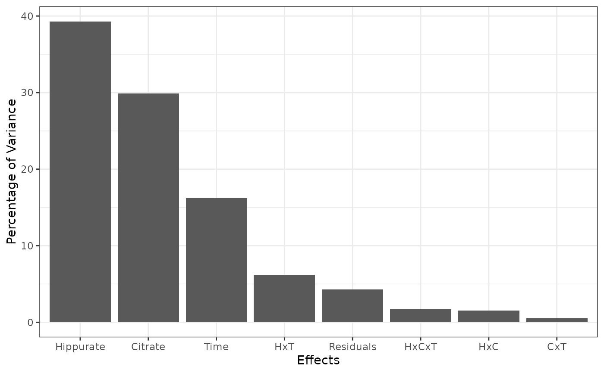
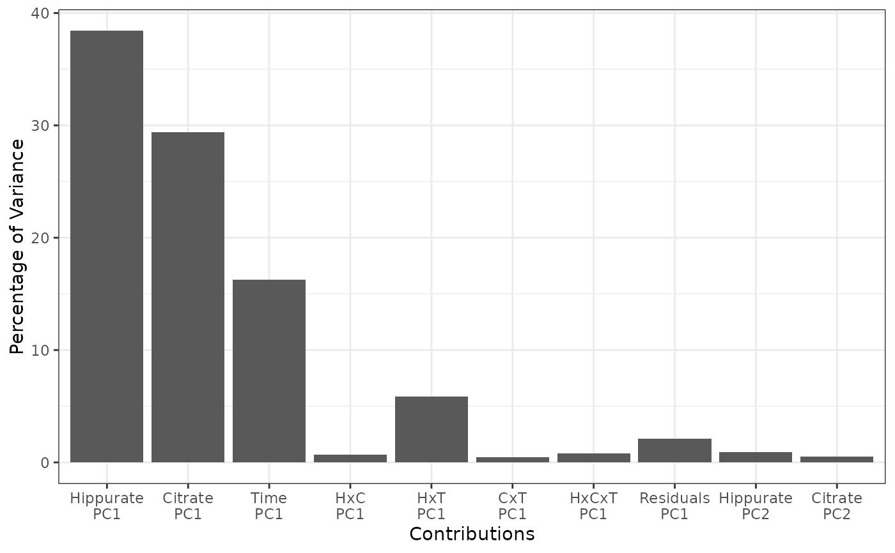

Reports the contribution of each effect to the total variance, but also the contribution of each PC to the total variance per effect. These contributions are also summarized in a barplot.
Arguments
- resLmpPcaEffects
A list corresponding to the output value of
lmpPcaEffects.- nPC
The number of Principal Components to display.
Value
A list of:
totalContribTableTable of the percentage of contribution of each effect to the total variance.
effectTableTable of the percentage of variance explained by each principal component in each model effect decomposition.
contribTableTable of the percentage of variance explained by each principal component of each effect reported to the percentage contribution of the given effect to the total variance.
combinedEffectTableEquivalent of the EffectTable for combined effects.
plotTotalPlot of the ordered contributions of TotalContribTable.
plotContribPlot of the ordered contributions of ContribTable.
Examples
data("UCH")
resLmpModelMatrix <- lmpModelMatrix(UCH)
resLmpEffectMatrices <- lmpEffectMatrices(resLmpModelMatrix)
resLmpPcaEffects <- lmpPcaEffects(resLmpEffectMatrices, method = "ASCA-E")
lmpContributions(resLmpPcaEffects)
#> $totalContribTable
#> Percentage of Variance
#> Hippurate 39.31
#> Citrate 29.91
#> Time 16.24
#> Hippurate:Citrate 1.54
#> Hippurate:Time 6.23
#> Citrate:Time 0.54
#> Hippurate:Citrate:Time 1.68
#> Residuals 4.30
#>
#> $effectTable
#> PC1 PC2 PC3 PC4 PC5 Sum
#> Hippurate 97.71 2.29 0.00 0.00 0.00 100.00
#> Citrate 98.22 1.78 0.00 0.00 0.00 100.00
#> Time 100.00 0.00 0.00 0.00 0.00 100.00
#> Hippurate:Citrate 44.01 38.51 15.13 2.34 0.00 99.99
#> Hippurate:Time 93.92 6.08 0.00 0.00 0.00 100.00
#> Citrate:Time 90.76 9.24 0.00 0.00 0.00 100.00
#> Hippurate:Citrate:Time 47.23 27.49 22.60 2.68 0.00 100.00
#> Residuals 48.54 16.90 10.28 5.93 4.32 85.97
#>
#> $contribTable
#> PC1 PC2 PC3 PC4 PC5 Contrib
#> Hippurate 38.41 0.90 0.00 0.00 0.00 39.31
#> Citrate 29.37 0.53 0.00 0.00 0.00 29.91
#> Time 16.24 0.00 0.00 0.00 0.00 16.24
#> Hippurate:Citrate 0.68 0.59 0.23 0.04 0.00 1.54
#> Hippurate:Time 5.85 0.38 0.00 0.00 0.00 6.23
#> Citrate:Time 0.49 0.05 0.00 0.00 0.00 0.54
#> Hippurate:Citrate:Time 0.80 0.46 0.38 0.05 0.00 1.68
#> Residuals 2.09 0.73 0.44 0.25 0.19 4.30
#>
#> $combinedEffectTable
#> PC1 PC2 PC3 PC4 PC5 Sum
#> Residuals 48.54 16.9 10.28 5.93 4.32 85.97
#>
#> $plotTotal

#>
#> $plotContrib

#>